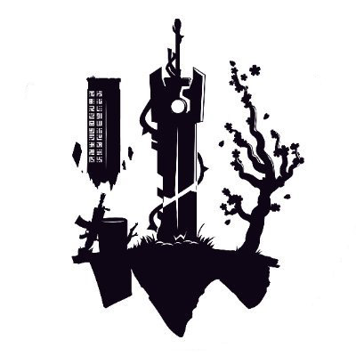

Hello, good to meet you! I am an Art Director with a Gaming focus and over a decade of industry experience. I am highly skilled in both in-house and outsource team management, and have had the pleasure of directing everything from massive, multi-million dollar outsourced art lifts to small, in-house indie teams over the course of my career.
Work Experience
Art Director of Gaming at Pixel Vault July 2022 - Dec 2024
• Shipped 3 complete games, one original and two remakes, and directed 2 other currently unannounced titles
• Provided artistic direction work for an in-universe web novel, two animated shorts, and a series of world-building characters and assets
• Developed a fully unique rigging and animation system in collaboration with Titmouse Studios for BattlePlan, allowing for fully generative, true-2D characters in game
• Managed timelines, asset storage and implementation, and budget, always coming in under budget and under timeline
• Developed scripting programs to automate creation of different borders and formats of assets
• Provided guidance on creative project quotes, including proposing pipeline changes to lower budget or time-frame projections
 Art Director at Webaverse Mar 2020 - May 2022
• Created and maintained an ‘Art Bible’ for in-house and outsource art teams
• Directed 3D assets and animations with strict optimization requirements for direct, in-browser gameplay
• Personally created a wide range of key concepts, including the core cast of characters and a number of main environments and biomes
• Researched, developed, and implemented new Ethical AI-based workflows for faster iteration and visual development
• Directed and oversaw the asset creation for a genesis pass drop that achieved over 4,000 ETH in total volume over a 2-week time period
• Created unique pipelines to suit a proprietary, in-development game engine
Director at the Art Work House October 2019 - Present
The Art Work House is a personal, non-profit passion project aimed at providing amateur artists the resources, community, and information needed to make the jump to industry work.
• Hosted notable artists throughout the industry to give workshops and talks, recorded and put on the Sessions at the Art Work House podcast on Spotify, as well as monthly art challenges and study sessions
• Designed a number of teaching resources aimed at beginner through intermediate artists, as well as community challenges and job boards for more advanced artists, all offered completely for free
• I still run and work on this community in my free time, organizing events with the help of an amazing team of volunteer mods, ambassadors, and art helpers, without whom it would be totally impossible to maintain
Lead Artist at The Airline Project: Next Gen Feb 2018 - Mar 2020
• Flexed out of my 'comfort zone' to fill various roles as needed
• Developed numerous custom workflows to tackle complex projects in a streamlined and consistent manner
• Worked closely with the dev team to harmonize the art assets and the gameplay loop"
• Helped to plan and execute a marketing strategy, complete with assets for use on social medias, blogs, and fundraising sites
• Oversaw UI creation and implementation, including designing a UI kit
Illustrator, Concept Artist, Consultant at Grant Roberts Art Mar 2014 - Feb 2018
• Learned and developed skills from every corner of the visual field, including UI/UX design, graphic design, 2D and 3D concepting, illustration, 2D and 3D animation, digital sculpting, asset creation, web development, technical art, art direction, and countless other disciplines
• Gained a deep understanding of organization, version control, time management, clear and concise communication, and marketing
• Consistently met and solved challenges presented by tight deadlines, tricky technical or budget requirements, and evolving project goals
• Extremely familiar with both 2D and 3D workflows for all styles and asset types
• Skilled at pipeline design and optimization
• Experienced mentor with a talent for bringing out the best in juniors and mid-level artists
• Traditionally trained with a strong artistic foundation, capable of both executing and directing everything from traditional gouache concepts to Ethical AI-enabled workflows
• Passionate about good team management, I aim to listen and understand first so that I can find the best way to support and enable my team to shine
Artist Mentor | MAP Program
Invited Mentor
With a mission to help artists build a sustainable life in the arts, the Montana Arts Council provides a program to Montana artists called the Montana Artrepreneur Program (MAP). MAP provides practical coursework covering 35 pragmatic, professional practice tools of art and business following a general outline of discovering, showing, telling, and funding “the story.”
Part of the program involves a multi-session intensive with a mentor, in which the students choose a mentor in their chosen field to instruct them over the course of a few weeks. I was honored to be chosen for a student working through transitioning from traditional to 2D digital art as their chosen field.
Guest Lecturer | Boise State University GIMM Program
Guest Speaker
Boise State's GIMM (Games, Interactive Media, and Mobile) technology program prepares students to create the experiences that manage the technology in our work and personal lives. Routinely professionals interact with online tutorials, websites, tablets, smart phones, and video streaming. The GIMM major provides students with the skills to execute work in all of these areas.
I was invited to give two guest lectures and QnA sessions with a focus on the games industry. The lectures specifically aimed to prepare students for applying for internships, and give insight into what art directors and studios look for in a portfolio when choosing who to hire, both for art and for programming.
Host | Sessions at the Art Work House Podcast
Podcast Host
Guests from various industries hang out at the Art Work House discord server and talk about any topic they believe will be most useful for burgeoning artists. Episodes are recorded live with a live audience, and speakers are given free rein to structure their Session in any way they see fit. Notable guests have included Adam Duff, Zeronis, and Dorian Iten.
Sessions at the Art Work House is hosted on Spotify and Apple Music, and has hit #2 in the Visual Arts category in multiple countries.
Guest Speaker | Karrino Podcast
Podcast Guest
The Karrino podcast covers all things creative and cutting edge, with guests calling in live to share insights about their different areas of expertise.
I was honored to be invited to join as the speaker for an episode covering 2D and 3D art creation and emerging creative technologies. Topics we covered included art learning and self-teaching, development of innovative and purpose-driven pipelines and workflows, and the controversial topic of AI and image GAN use.